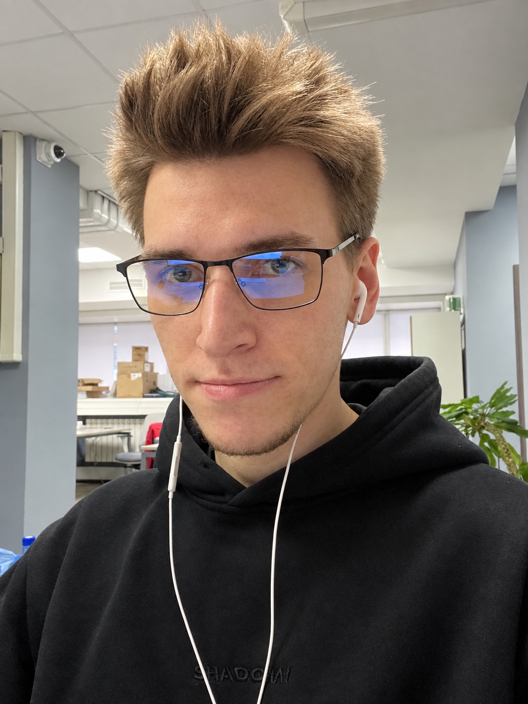

Ручное тестирование веб-приложений · изучаю автоматизацию на Java · пишу тест-кейсы и баг-репорты, в которых не нужно переспрашивать.

4 года я работал в рознице - начинал с рядового продавца, закончил директором магазина в сети «Макси». За это время на собственной шкуре понял простую вещь: если в отчёте цифры не сходятся хоть на копейку, это не мелочь - это повод разобраться, где, что и почему. Инвентаризации, недостачи, разбор браков с поставщиками - по сути, я всё это время искал, где что-то пошло не так. Просто не называл это тестированием.
Сейчас учусь на инженера по тестированию в расширенном курсе от Нетологии. Учу Java - буду писать автотесты, а не только руками кликать по интерфейсу. Чтобы не быть голословным, пишу и тестирую свои же пет-проекты и маленькие коммерческие сайты услуг. Примеры оформленных мной QA-документов: тест-кейсы, чек-листы, баг-репорты - можно посмотреть ниже.
Я многого не знаю, но знаю точно, что учусь и не боюсь лезть в то, в чём пока не разбираюсь.
Нетология · 2026–2027
Только то, что можно открыть и проверить - каждая карточка ссылается на конкретный проект.
Пошаговые сценарии проверки функциональности с ожидаемым результатом на каждом шаге.
Регресс-проверки перед релизом: что должно продолжать работать после изменений.
Найденные дефекты: окружение, шаги воспроизведения, ожидаемый и фактический результат.
Визуализация прожитых лет в реальном времени с точностью до 9 знаков после запятой - сетка жизни, светлая/тёмная тема, экспорт в PNG.
4 дыхательные техники, включая технику Вим Хофа - плавная анимация кольца через conic-gradient, вибрация по паттернам, точный тайминг.
Оценка 8 сфер жизни с AI-разбором через Pollinations API, генерацией персональных рекомендаций и экспортом в PNG.
Прохожу расширенный курс по тестированию, но не жду диплома, чтобы начать: уже применяю знания на реальных пет-проектах и разбираю чужой код. Ищу первую команду, где можно расти - готов к тестовым заданиям, стажировкам и junior-позициям.
Написать в Telegram